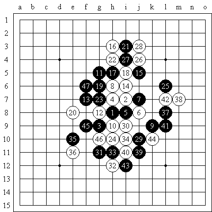
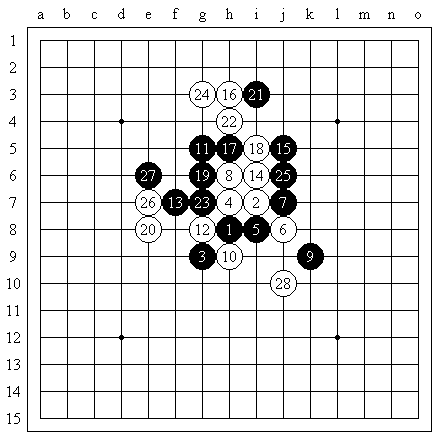

sky未能阻挡木月长老的前进步伐
#1 sky未能阻挡木月长老的前进步伐 作者：江南新绿 发表时间：2007-7-28 19:51:32

gyyandgod为明教长老，木月是也。9盘之后暂列明教第一届名人杯慢棋赛榜首。这盘是木月持黑对sky白棋。斜月开局。前22手都是常见变化。24手sky变着。木月长老抓住微弱的机会，25巧妙的攻击，使白棋18，22的斜二失去了方向。27在上面交换干净。29跳，31和25形成组合，封住所有白棋变化。白棋32未能阻挡黑棋联络；34手，sky坦言走的太急。木月抓住最后机会。35强劲，黑棋从哪个方向都可能出棋。sky挡了几下后还是迅速的结束了战斗。

24手常见参考变化如图：25黑棋虽然右边加强了。但26白棋左边急所。27之后黑棋左上无法胜出。28之后双方平衡。
#2 Re:sky未能阻挡木月长老的前进步伐 作者：天京 发表时间：2007-7-30 0:40:47
下24的时候必然要预料到25可能会如此下，否则下24本身的动机就值得推敲了，问题是，他为什么要下24？就好像下图27也是可以走其他点的，比如F9，白就很不好下（也许不是必败）。